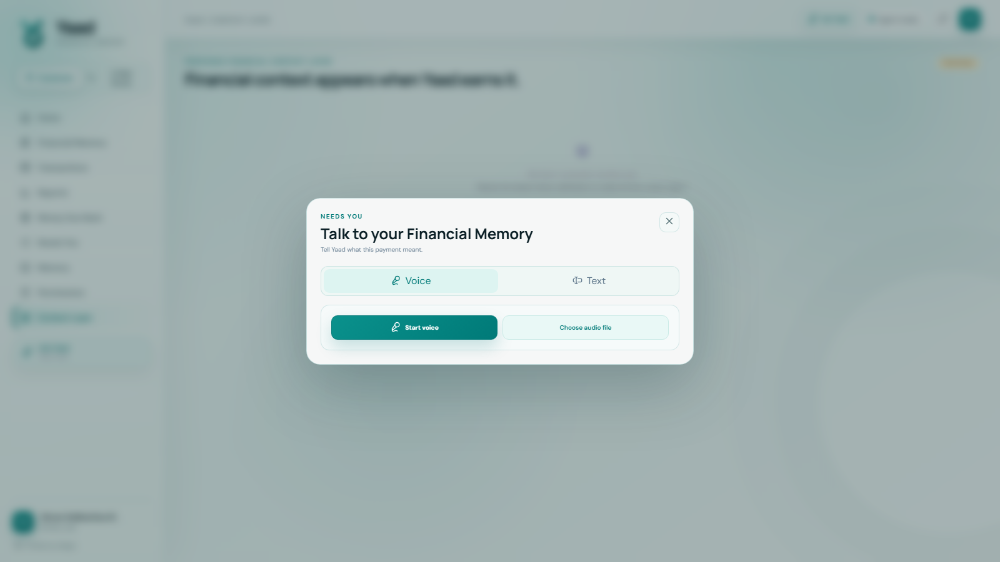
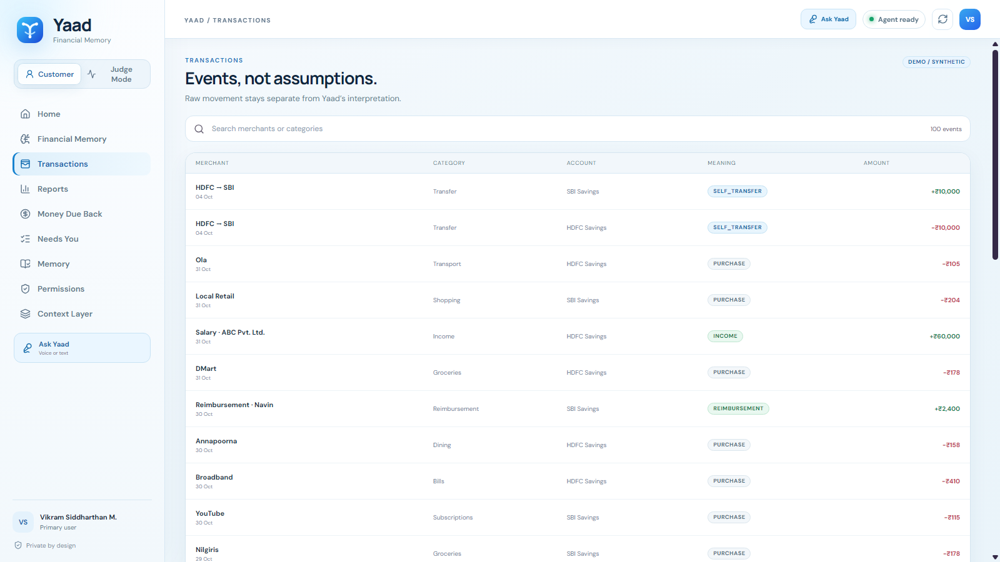
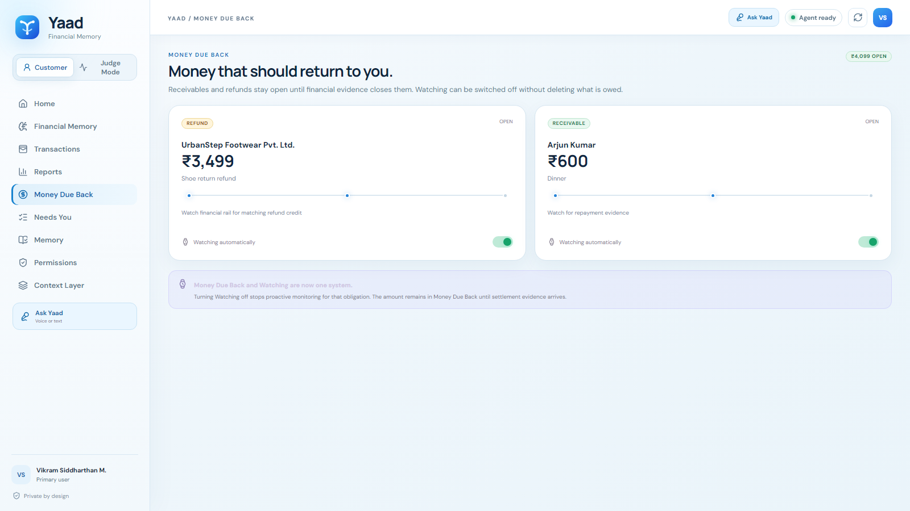
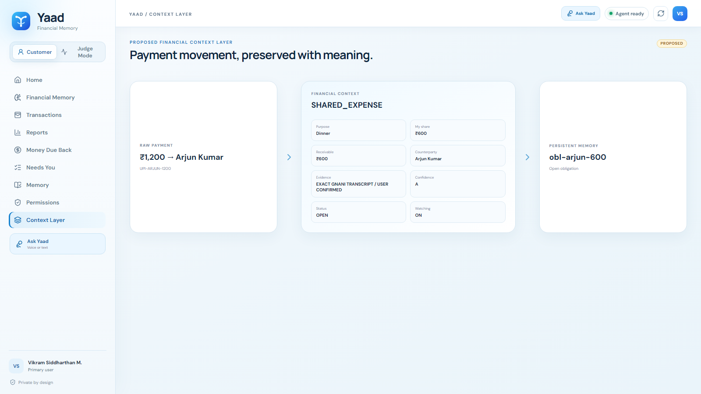
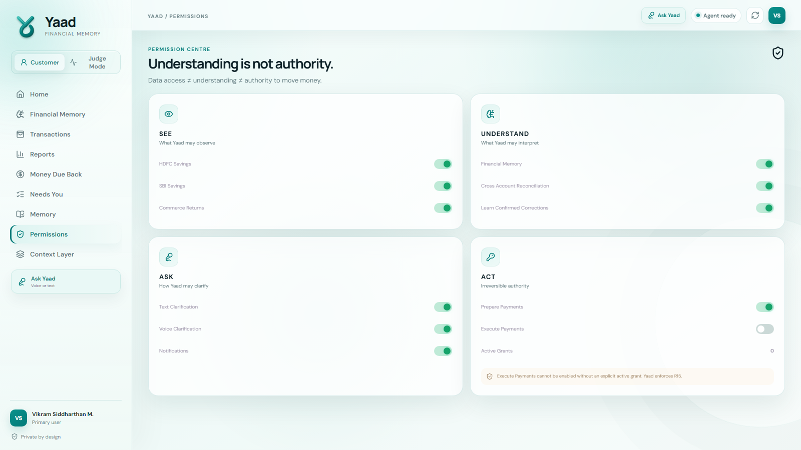
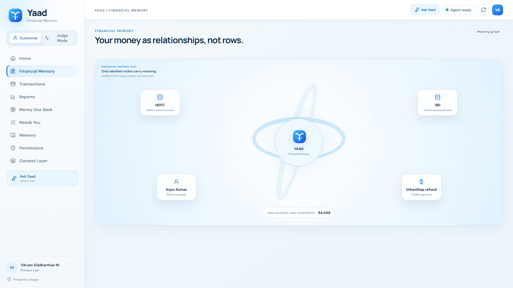

01 · Home
Home — “Your month makes sense.”
The primary surface shows explained spending, Money Due Back, transfers excluded, balances, runway, watching and whether anything Needs You.

Every point where a person sees, answers, authorises or corrects Yaad. Product screens below are captured directly from the final light-blue Round 3 build; transient clarification states are rendered in the same visual system.
Yaad cannot safely infer what this payment meant.

“send the audio this for dinner 600 was mine 600 is what he owes me”No correction or rewriting is applied.






One connected source is unavailable or stale. Yaad will not infer missing transactions.